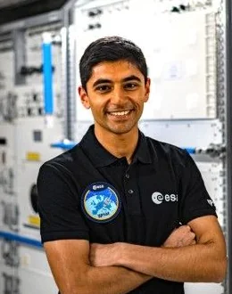
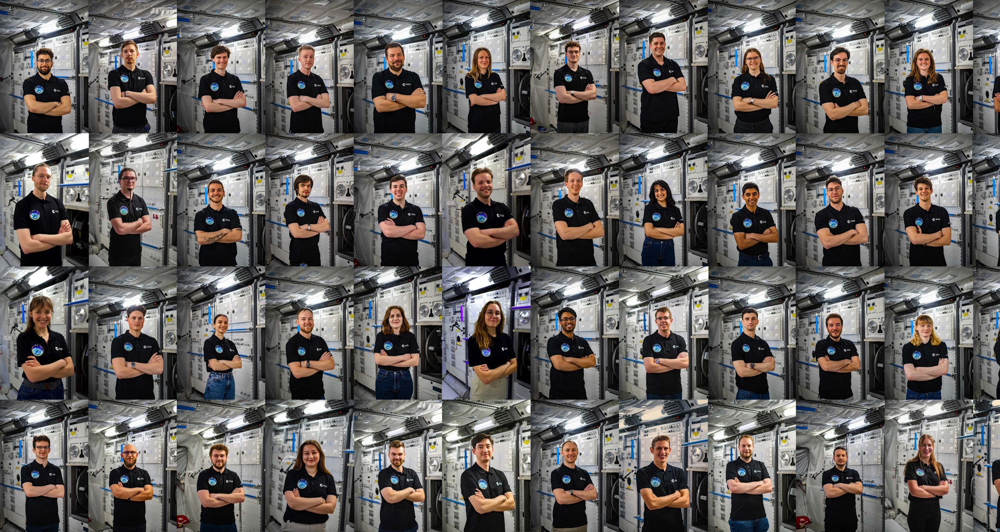

ESA / FLIGHT PAYLOAD
YPSAT
Structural design, integration and environmental-test contributions to an Ariane 6 payload.
CHRONOLOGICAL EDITION ENGINEERING PORTFOLIO
A timeline of engineering work across spacecraft, propulsion, industrial design and university projects. Browse by role and period, with selected project imagery and source documents.

SELECTED FROM THE TIMELINE
ESA / FLIGHT PAYLOAD
Structural design, integration and environmental-test contributions to an Ariane 6 payload.

ESA / TEST FACILITY
A lightweight moving mechanism for instrumentation in the Large Space Simulator.

CRANFIELD / PROPULSION
Student-led liquid-engine development, supported by build, test and instrumentation work.

YEAR IN INDUSTRY / R&D
Production-equipment redesign, analysis, test-jig development and manufacturing support.
A PRACTICAL APPROACH
Design, analysis and hands-on development, brought together in buildable engineering.
Browse all periods